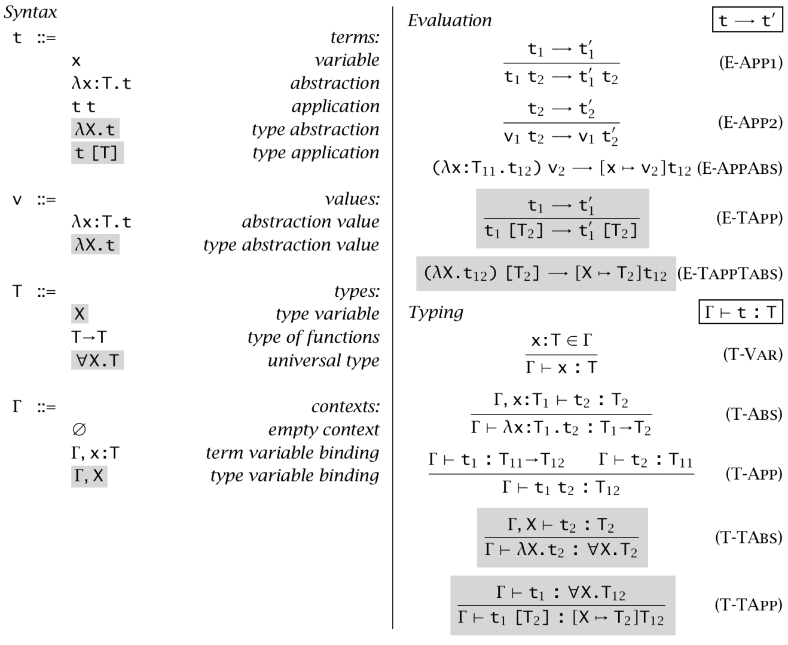

System F in Polymorphic Blocks
Builder
Introduction
Exercise
A visual interactive tool for learning lambda calculus
Builder
- freely build expressions and get evaluations
Introduction
- introductions of the blockly expression representation
Exercises
- interactive quizzes for lambda calculus
Below is a syntax table of typed lambda calculus taken from Types and Programming Languages by Benjamin C. Pierce.

This website is open source and based on the
Google Blockly
project. Gratefully using code and inspiration from
Math Blocks
,
BlocklyLambdaCalculus
,
Polymorphic Blocks
,
App Inventor
and
HenrikD's Blockly plugins
.